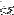

An expression of the form defined(  ), where
), where  is an ML
symbol and is an ML namespace specifier, is a boolean expression
that yields true if and only if any member included before this test
exports a definition under this name. Therefore, order among members
matters after all (but it remains unrelated to the problem of
determining static dependencies)! The namespace specifier must be one
of: structure, signature, functor, or funsig.
is an ML
symbol and is an ML namespace specifier, is a boolean expression
that yields true if and only if any member included before this test
exports a definition under this name. Therefore, order among members
matters after all (but it remains unrelated to the problem of
determining static dependencies)! The namespace specifier must be one
of: structure, signature, functor, or funsig.
If the query takes place in the ``exports'' section of a description file, then it yields true if any of the included members exports the named symbol.
Example:
Library
structure Foo
#if defined(structure Bar)
structure Bar
#endif
is
#if SMLNJ_VERSION > 110
new-foo.sml
#else
old-foo.sml
#endif
#if defined(structure Bar)
bar-client.sml
#else
no-bar-so-far.sml
#endif
Here, the file bar-client.sml gets included if SMLNJ_VERSION is greater than 110 and new-foo.sml exports a structure Bar or if SMLNJ_VERSION <= 110 and old-foo.sml exports structure Bar. Otherwise file no-bar-so-far.sml gets included instead. In addition, the export of structure Bar is guarded by its own existence. (Structure Bar could also be defined by no-bar-so-far.sml in which case it would get exported regardless of the outcome of the other defined test.)